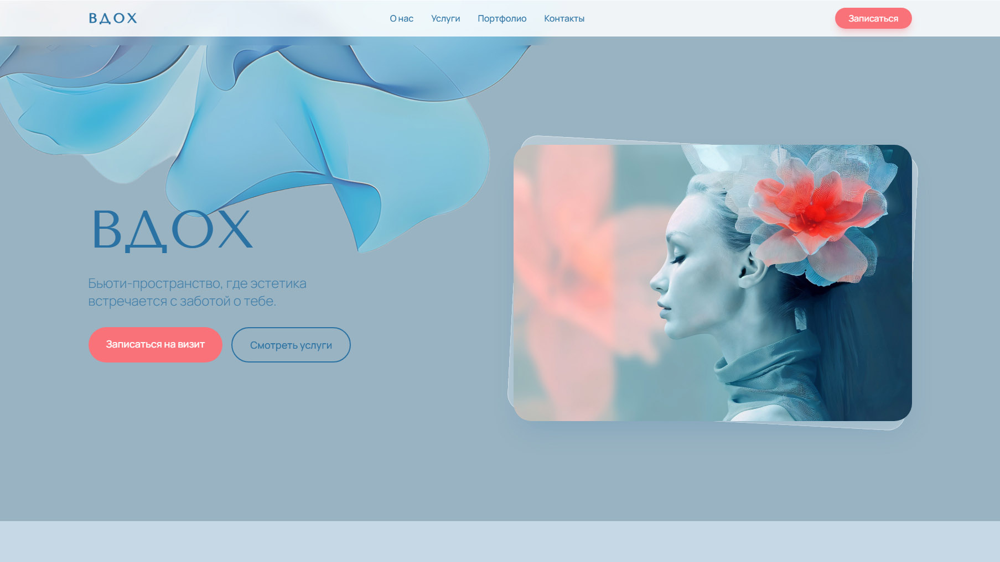
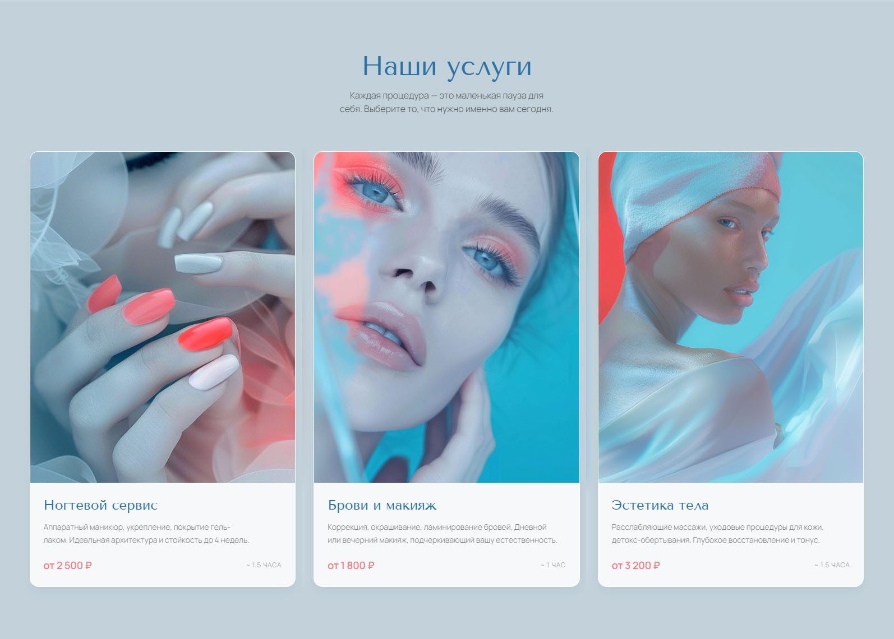
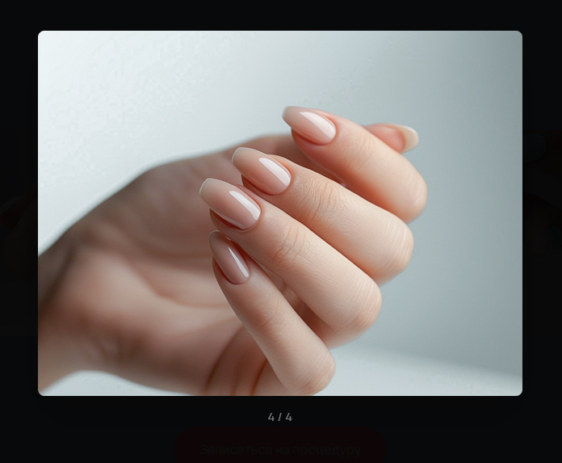
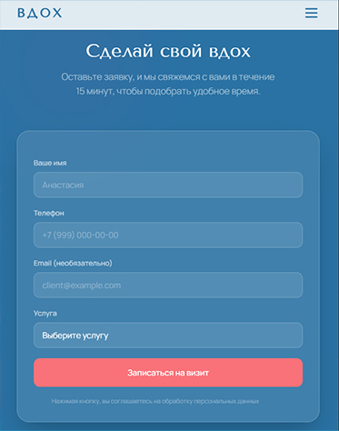
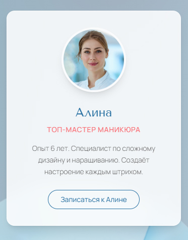

Задача
Создать современный, быстрый сайт для салона красоты, который будет вызывать доверие и удобно записывать клиентов.
Стек технологий
Сроки
3 дня
AI-генерация и визуал
Проблема: У клиента не было качественных профессиональных фотографий интерьера и мастеров на старте.
Решение: Я использовала инструменты AI-генерации для создания атмосферных, стилизованных изображений, которые идеально вписались в минималистичный дизайн. Это сэкономило бюджет клиента и ускорило запуск.


Лёгкая галерея на Alpine.js
Проблема: Тяжелые плагины для галерей замедляют загрузку сайта, что критично для мобильного трафика.
Решение: Реализовала лайтбокс-галерею на чистом Alpine.js. Вес скрипта минимален, анимации плавные, а сайт загружается мгновенно даже при плохом интернете.
Детали интерфейса


Хотите такой же продуманный сайт?
Давайте обсудим ваш проект. Я помогу выбрать лучшее решение под ваши задачи и бюджет.
Обсудить проект